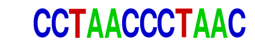

| p-value: | 1e-312 |
| log p-value: | -7.188e+02 |
| Information Content per bp: | 1.970 |
| Number of Target Sequences with motif | 251.0 |
| Percentage of Target Sequences with motif | 2.81% |
| Number of Background Sequences with motif | 23.3 |
| Percentage of Background Sequences with motif | 0.06% |
| Average Position of motif in Targets | 120.7 +/- 44.6bp |
| Average Position of motif in Background | 108.6 +/- 52.4bp |
| Strand Bias (log2 ratio + to - strand density) | 1.5 |
| Multiplicity (# of sites on avg that occur together) | 1.00 |
| Motif File: | file (matrix) reverse opposite |
| Rank | Match Score | Redundant Motif | P-value | log P-value | % of Targets | % of Background | Motif file |
| 1 | 0.739 | 1e-275 | -635.015902 | 2.44% | 0.05% | motif file (matrix) | |
| 2 | 0.602 |  | 1e-86 | -199.672671 | 0.59% | 0.01% | motif file (matrix) |
| 3 | 0.662 | 1e-13 | -31.610067 | 11.29% | 8.92% | motif file (matrix) |
Tom Clancy has to pay royalties to Chuck Norris because "The Sum of All Fears" is the name of Chuck Norris' autobiography.